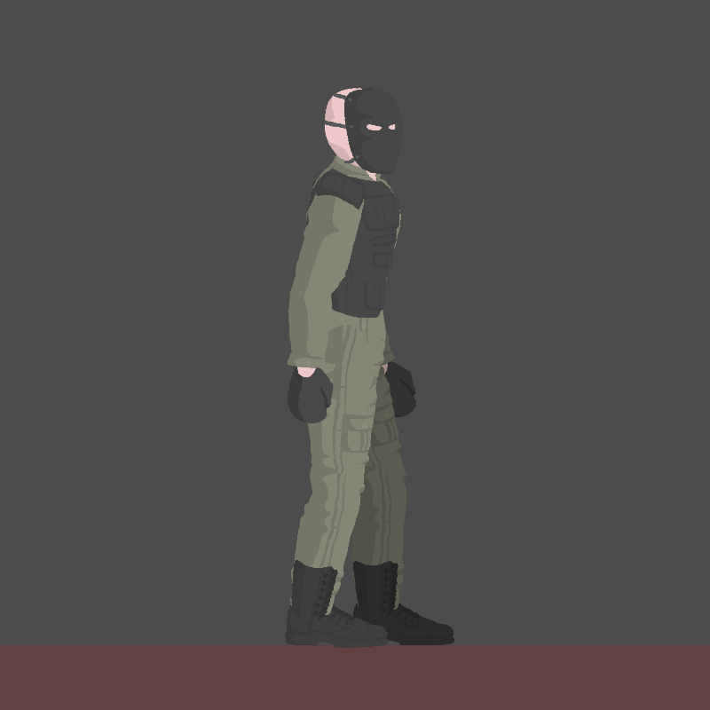

Pastel 2D Platformer Assets


2D character sprites for a sci-fi themed platformer. On the left you can see the base model, the middle is the model with full clothes (clothing was made swappable in the Godot game engine), and on the right you can see the muscle variation.
An example of how the assets were used in the prototyping of a 2D platformer project, this video showcases new assets aswell as different combinations of clothes and animations.

The constituent sprites of the pastel character model, labelled by which body part they represent.